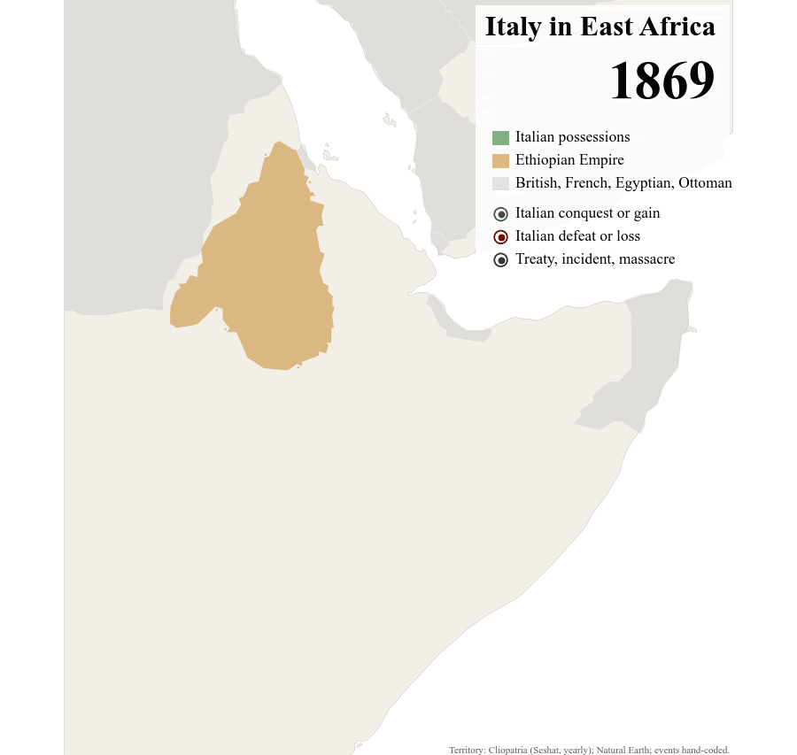

The Colonial Roots of Modern Nationalism: The Case of Italy
(with Matteo Broso)
Submitted
Related project: Interactive maps and time series graphs of electoral results in Italy, 1948-2022
Abstract
European empires dominated entire continents for centuries. Yet, the literature on colonial legacies has largely focused on the long-term effects of colonialism in former colonies, overlooking its consequences for the former colonial powers themselves. In this article, we study the effect of Italy's colonial expansion in East Africa on contemporary political outcomes. Using data on all Italian soldiers buried in Eritrea and Ethiopia and the contemporary distribution of surnames across Italy, we construct an index of exposure to colonial wars at the municipality level. To isolate exogenous variation in municipalities' exposure, we exploit the historical geographical distribution of mountain troops of the Italian Army, which were largely deployed in East Africa because of Ethiopia's mountainous territory. We show that exposure to the 1930s colonial campaigns increased support for neo-fascist and nationalist parties in the immediate postwar electoral cycles, and still increases support for far-right parties today. Exploring possible mechanisms, we find that: (i) the effect is amplified in municipalities with a larger presence of Black African immigrants; (ii) far-right parties obtain larger electoral returns from anti-immigration rhetoric in municipalities with stronger colonial exposure. Taken together, our results suggest that the racial narratives used to justify the colonial expansion may have persisted across generations and continue to shape political attitudes today.